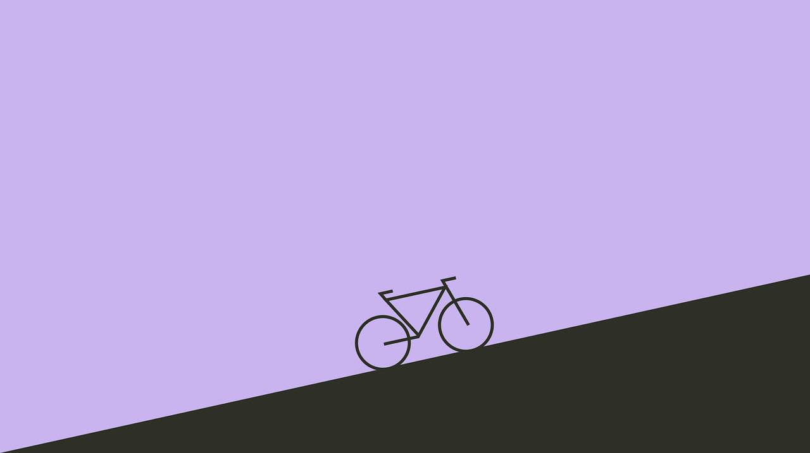

Минимализм
Минимализм является популярным подходом современного веб-дизайна. Экспериментируйте с цветами, переходами, навигацией, разбитой композицией или даже полным удалением всех элементов — есть множество способов реализовать минимализм, чем вы можете себе представить.
ПодробнееЧаще всего, минимализм в веб-дизайне может быть неправильно истолкован как нечто, требующее меньше усилий или времени для создания. В конце концов, передача ощущения простоты и первоочередного внимания на самом деле является целью минималистичного дизайна. Однако говорить, что это требует меньше работы, совсем не правильно. Минимализм лишен лишних функций и уловок для того, чтобы донести ясную и лаконичную информацию до целевой аудитории.
Чтобы правильно выполнить идею минималистичного дизайна, необходимо установить вашу основную цель. Возможность представить ясное сообщение своим посетителям является главной функцией минималистичного дизайна.
Попытка выполнить широкий объем информации, сохраняя при этом минимализм, может сыграть с вами и злую шутку, поэтому, прежде чем погрузиться в реальный процесс проектирования, убедитесь в наличии подробного плана проекта.
Потратьте время, чтобы обдумать, о чем именно ваш сайт. Не все сайты соблюдают единую тематику, и если этот конкретный проект является одним из таких сайтов, то лучшим способом скорее может стать другой вид веб-дизайна. Если у вас есть четкая цель, следующий шаг — рассмотреть, какие фрагменты информации будут важны для вашего дизайна, и структурировать их в порядке значимости. Вы можете быть удивлены тем, как на самом деле мало информации действительно нужно представить пользователю за один раз, чтобы донести свою мысль.
С минималистическим подходом, веб-сайт значительно упрощает навигацию, что увеличивает пользовательские запросы, которые крайне важны для достижения верхней позиции в поисковой системе и повышения коэффициента конверсии.
Почему минимализм так популярен в дизайне?
Минимализм чтит содержание. Контент — это король, а дизайн должен чтить короля. Одна из основных целей минималистического дизайна — привлечь внимание к вашему контенту. Минимализм облегчает потребление контента, поскольку пользователям не нужно тратить дополнительное время на извлечение важной информации из множества деталей.
Минимализм помогает добиться лучшей производительности. Минималистские продукты имеют меньше объектов и поэтому загружаются быстрее.
Минимализм помогает создать дизайн, который работает для всех размеров экрана. С ростом использования мобильных устройств многие дизайнеры рассматривают минимализм как решение для лучшей совместимости экранов разных размеров.